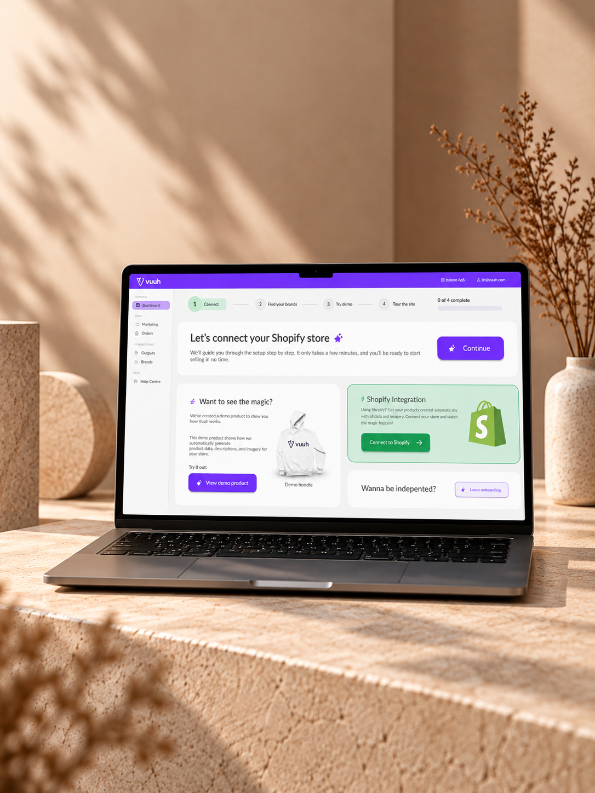
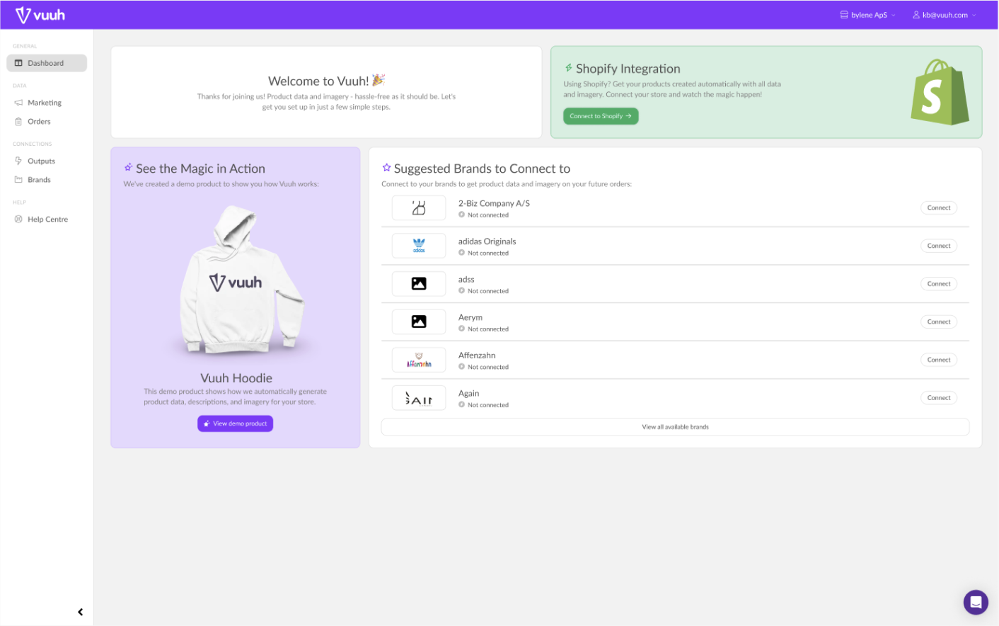
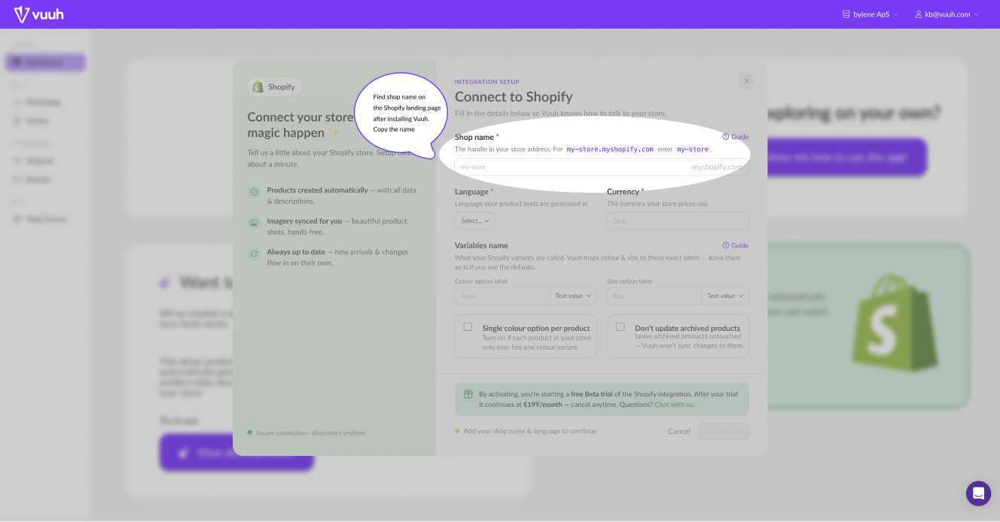
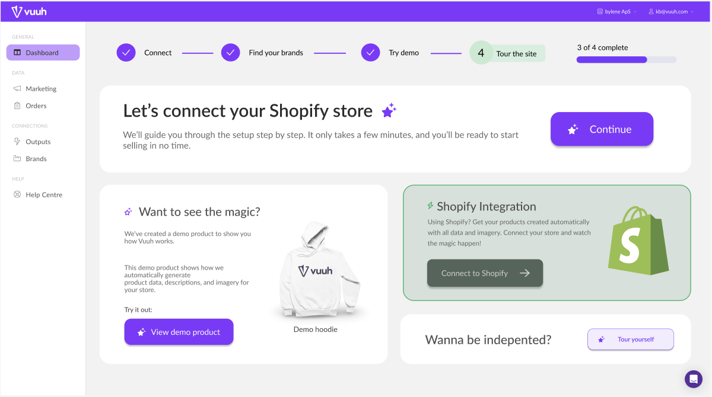
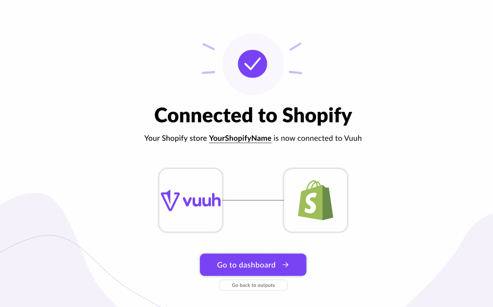

Mangel på information
Brugeren får ikke nok information og vejledning, hvilket kan føre til fejl og frustration.
CASE 02
Vuuh er en platform, som hjælper webshops med automatisering af produktdata. I denne case undersøgte og redesignede vi deres onboardingoplevelse med fokus på tydelig vejledning, færre valg og tydelig feedback.

I den oprindelige version af Vuuhs dashboard blev brugeren efterladt uden retning. Det var uklart for brugeren, hvad de præcis skulle gøre for fx at integrere Vuuh med Shopify. Det virkede som om, at man forventedes at vide, hvad man skulle gøre, hvilket gav færre brugere til Vuuh.

Vuuhs oprindelige dashboard før redesign.
Vi lavede en UX-audit af den eksisterende løsning, hvor vi gennemgik flowet og identificerede de vigtigste problemer, vi ville løse. Derudover analyserede vi også flowet med en heuristisk evaluering og et cognitive walkthrough. Vi prioriterede at fokusere på, at alle skulle kunne forstå denne onboardingproces, uanset hvilke erfaringer man kommer med. Her er 3 vigtige fokuspunkter, vi arbejdede med på baggrund af vores UX Audit.
Se UX-audit summaryBrugeren får ikke nok information og vejledning, hvilket kan føre til fejl og frustration.
Vigtige handlinger var svære at finde og det var uklart, hvad man skulle gøre først.
Brugeren ved ikke om en handling er gennemført, eller hvad næste skridt er.

For at løse problemet med manglende information, tilføjede vi en guide til at integrere Vuuh i Shopify, da det var en centrale del af onboardingen. Vi brugte talebobler i guiden, så brugere ikke bliver tabt på brugerrejsen. Vi valgte også at indramme det trin, brugeren er igang med, så der ikke er andet der larmer for dem.

For at gøre løsningen mere intuitiv, har vi fjernet alt det unødvendige fra forsiden og gjort CTA til guiden meget tydeligere, så brugeren kan se, hvor de skal starte. Vi har også gjort det mere tydeligt, at deres demo er en demo, så brugerne får øjnene op for, at de kan se hvordan det hele virker hos Vuuh.

Vi har lavet mere tydelig feedback, så brugeren kan se, når de har gennemført et trin eller en proces. Feedbacken er både visuel og tekstbaseret, så brugeren kan se, hvad der sker, og hvad næste skridt er. Vi har også tilføjet en status-bar øverst på siden, så brugeren hele tiden kan følge med i, hvor langt de er i processen og hvad de mangler at se på.
Brugeren får nu en mere intuitiv og overskuelig oplevelse, hvor de kan se, hvad de skal gøre og hvordan de skal gøre det.
Vuuh slipper for mange unødige henvendelser fra brugere, som ikke forstår, hvordan de skal bruge platformen.
Alle kan være med hos Vuuh nu og nemt få gang i deres Vuuh-konto.
Denne case har givet mig en større forståelse for, hvor vigtigt det er at se sit onboardingflow med brugerens øjne, hvis man vil skabe en succesfuld brugeroplevelse. Jeg har lært, at man kan opnå mere, når ens brugere bliver guidet grundigt og hjulpet på vej gennem hele deres brugerrejse. Næste skridt i denne case ville være at brugerteste løsningen grundigt og derefter tilpasse løsningen yderligere, så den kan skabe mest mulig værdi for brugerne.
Jeg har fået mere erfaring med at identificere og løse problemer i onboardingflows, så brugeroplevelsen vægtes højt helt fra starten.
Arbejdet med brugerforståelsen har givet mig dybere indsigt i, hvordan man kan få brugerne til at føle sig set og forstået.
Jeg har lært, hvor vigtigt det er, at undersøge til bunds og lave grundigt forarbejde, inden man ændrer på designet.